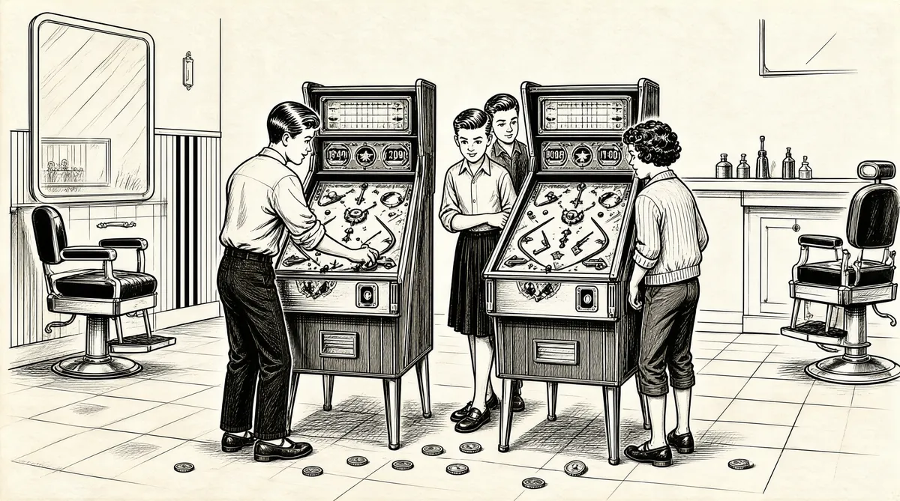

第10章 犯罪行为实录

成绩差、逃漏税金和离家出走，这是沃伦在初中最小的麻烦事。他的父母并不知道这些，不知道自己的儿子正迈向犯罪。
嗯，当我搬到华盛顿之后，上八九年级的时候，我很抵触社会，不喜欢社交。我遇到行为不良的人，和他们一起聊天，做了我不应该做的事。我只是一味地做叛逆之事。我很不开心。
一开始是搞学校男孩子都搞的小恶作剧。
我喜欢印刷车间。我过去在打字课上计算字母和数字出现的频率，这是我一个人能做的事。你知道，我可以装配好打字机之类的东西。我喜欢打各种各样的东西。
我虚构了一个头衔：全美戒酒联盟主席，牧师保罗。我以这个头衔给人们写信，信上说我多年来在全国到处演讲关于酒的危害。在去往各处的时候，我的年轻助手哈罗德总陪着我。从哈罗德的身上，大家可以看到酒对人的危害。他会站在讲台上，拿着一品脱酒，流着口水，无法理解喝酒对自己有什么影响，非常可怜。接着，我会说，不幸的是，年轻的哈罗德上周去世了，我们都认识的一位朋友建议说你也许可以代替他的位置。1
沃伦相处得最舒心的朋友支持和鼓励了他的叛逆冲动行为。他和几个新朋友，唐·丹利和查理·特龙，喜欢在新开的西尔斯商店外转悠。这家商店在邓雷环岛附近——内布拉斯加大道和威斯康星大道交叉口——是一处令人大开眼界的现代设计，位于邓雷镇中心，而邓雷镇是华盛顿第二大古老的生活区。在西尔斯商店起伏的金属房顶上，“西尔斯”的字母和成人一般高，它的房顶比人行道要高出好几层楼。2在房顶上的西尔斯招牌后面，隐蔽着一大新奇之物：一个开放的停车场。这个地方很快就成了高中生停车和约会的场所，同时也成了所有初中孩子们逗留玩耍的地方。午饭时间，或者每个周六，沃伦和朋友们坐H2路公车到这里。
大部分孩子都很喜欢西尔斯安装在商店底层的黑色小型午餐台，它的传送带全天都在向外传送着炸面包圈，非常吸引人。不过，沃伦、唐和查理喜欢街对面的伍尔沃斯零售店，即便警察局就在对面的拐角处。伍尔沃斯位于西尔斯的斜对角。他们可以在那里吃午饭，并透过玻璃观看外面的热闹场景。
吃完汉堡后，几个男孩沿着楼梯走到西尔斯的地下楼层，经过午餐台，径直走到体育用品区。
我们只在隐蔽的地方偷东西，偷的都是自己用不着的东西。我们偷高尔夫球包和高尔夫球棒。我走出体育用品所在的楼层，从楼梯走上街道，手里拿着一个高尔夫球包和几根高尔夫球杆。球杆是偷的，包也是偷的。我偷了好几百个高尔夫球。
他们把自己的偷窃行为称为“顺”（“顺手牵羊”之意）。
我不知道为什么我们没有被抓住。我们不可能毫无破绽。即便成年人在做坏事的时候看起来也不是一脸无辜样。3
我把高尔夫球拿回家，装满了抽屉里的橙色袋子。西尔斯一把球摆放出来，我就去“顺”。我并不需要这些球，真的。我当时不卖球了。很难想出在抽屉里放这么多高尔夫球的原因所在，橙色袋子变得越来越鼓。我应该已经把偷的东西分处放置了。但是，我在父母面前还是编造了一个疯狂的故事——不过，我知道他们不相信我——我告诉他们，我有个朋友，他父亲过世了。他一直想找到更多他父亲曾买过的高尔夫球。就这事来说，谁知道我父母晚上都交谈了些什么。4
巴菲特家的人吓坏了。沃伦是他们又聪明又有天赋的孩子，但在1944年年末，他已经变成了学校的不良少年。
我的成绩让我不快。数学C，英文C、D、D，自立、勤奋、礼貌的评分都是X。我和老师的接触越少，成绩就越好。实际上，有一段时间，他们让我一个人待在一个房间里，在那里，他们有些强制性地给我上课，就像对待汉尼拔·莱克特一样。5
毕业典礼到来的时候，学生们都被告知要穿西装、打领带，但沃伦拒绝这么做。他的校长伯蒂·巴克斯对此觉得忍无可忍了。
他们不让我从艾丽斯·迪尔毕业，因为我太捣蛋，而且不愿得体着装。这种行为问题很严重，也让人讨厌。我真的是很叛逆。有些老师都认为我将成为一个一无是处的祸害。我为行为不良所作的检查刷新了学校纪录。就是到了这种程度。
但是我的父亲没有放弃我，事实上，我的母亲也没有。他们都没有。有信任你的父母真的是很棒的一件事。
不过，到了1945年春，沃伦开始上高中的时候，家里也觉得受够了。到那个时候，要如何鼓励和激发沃伦已经不再是什么秘密。霍华德威胁要断绝他的收入来源。
一贯支持我的父亲说：“我知道你的能力。我不是要求你做到百分之百，但是，你要么继续这么我行我素，要么，你就做一些和你的潜能有关的事。不过，如果你依然我行我素，你就必须放弃送报的活儿。”这对我造成很大的打击。父亲话音不高，只是想让我知道他对我感到失望。你知道，相比他告诉我不能做这个或那个，这可能更让我觉得难受。